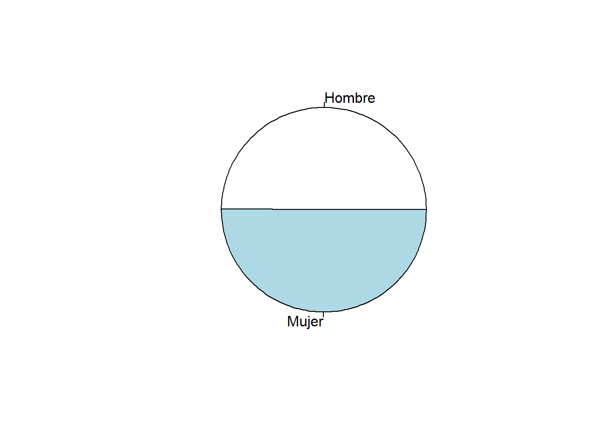
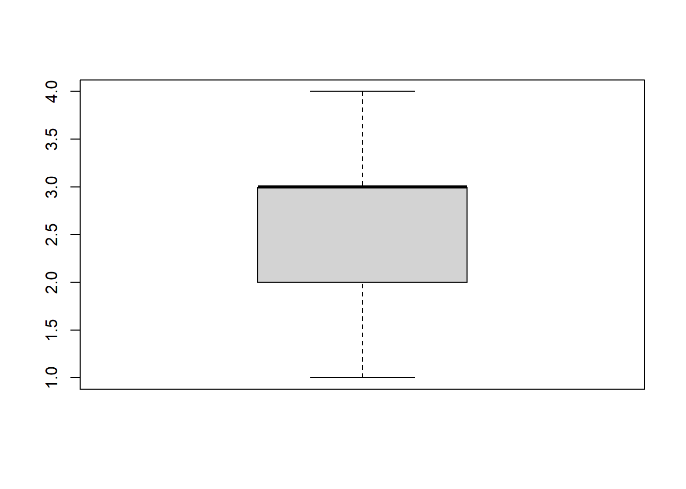
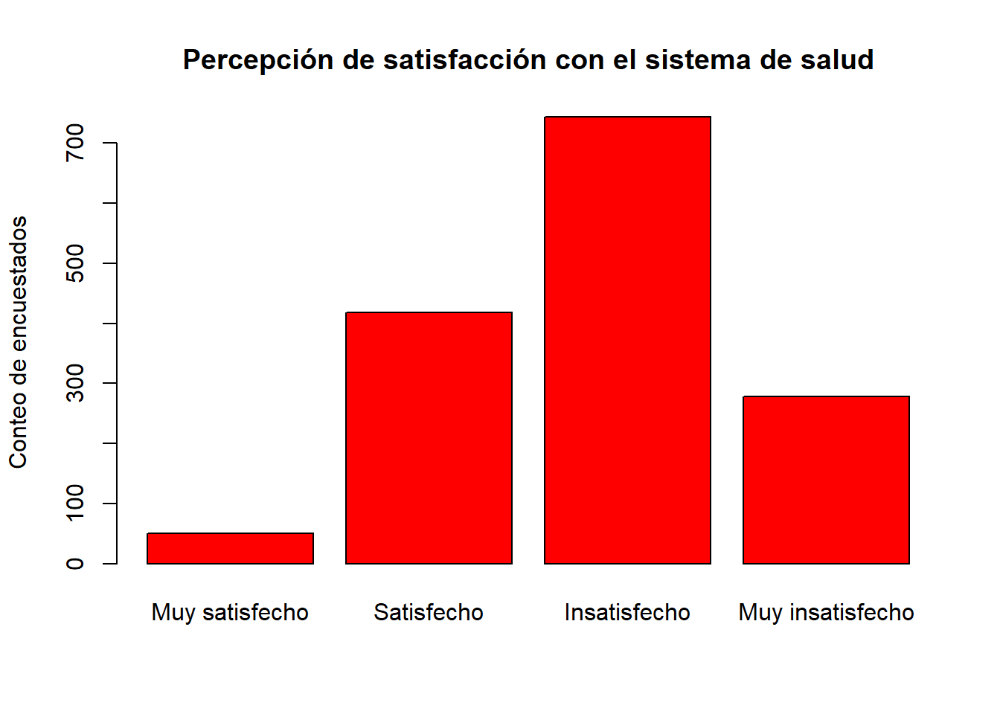
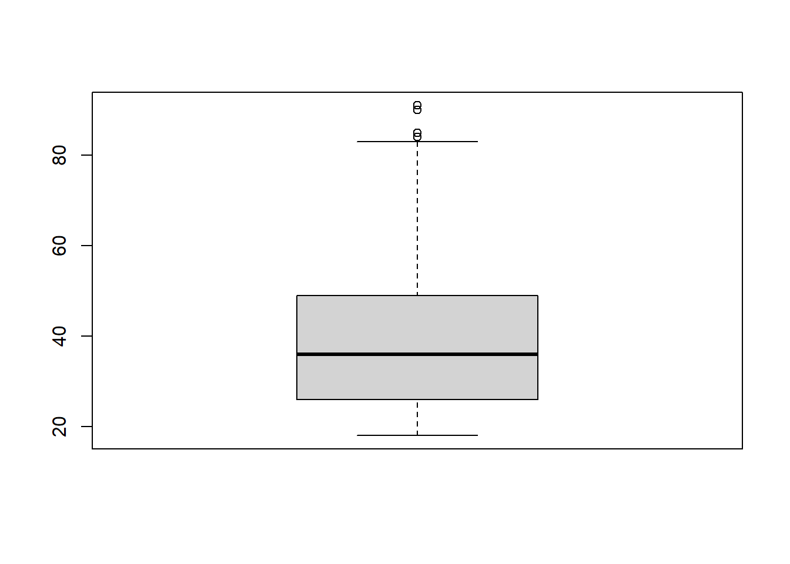
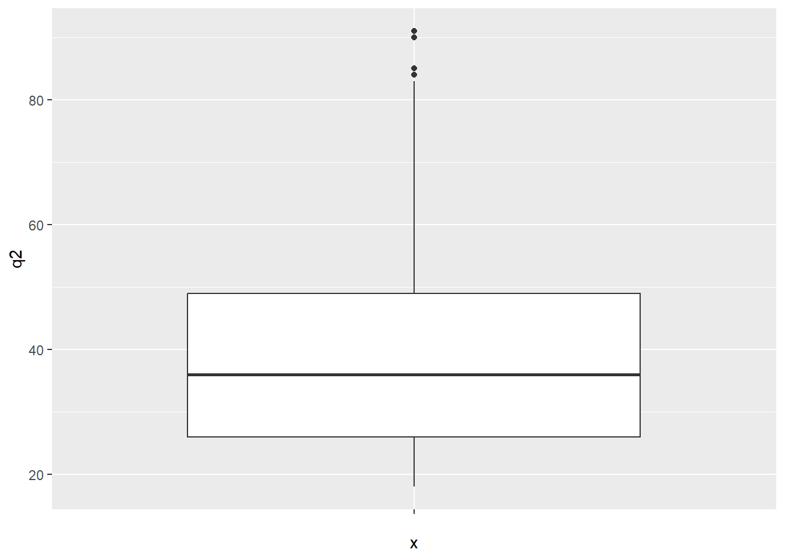
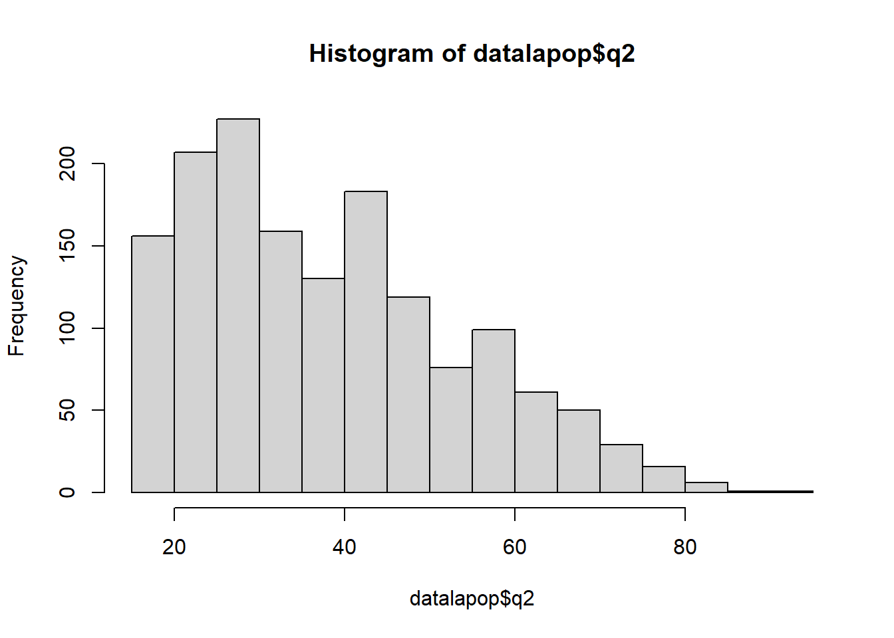
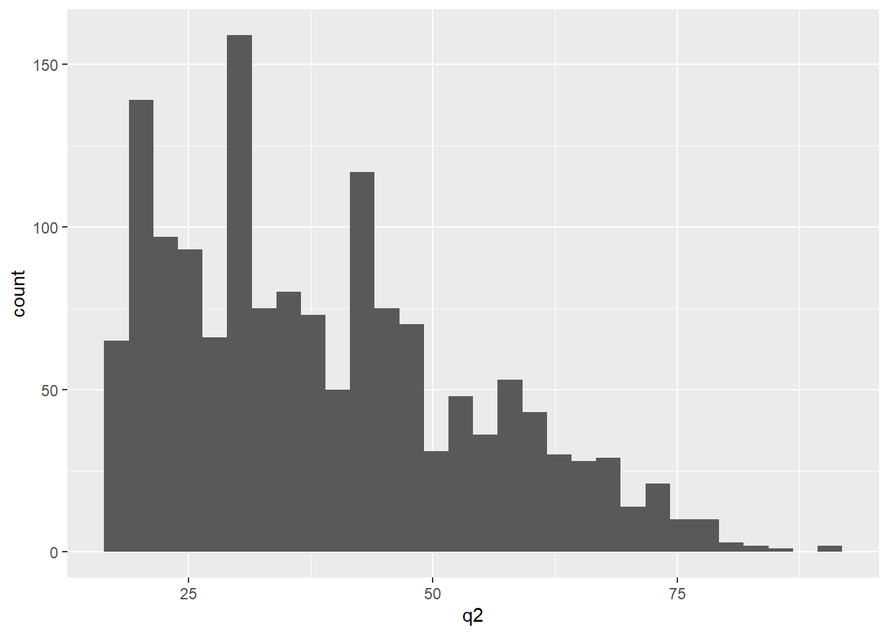

a = 5+6 # a = objeto
a[1] 11 Replica el html visto en clases con los códigos que contiene correspondiente a la exploración univariada de los diferentes tipos de variables. Recuerda que el R es un software por lenguaje de objetos.
Realiza tu propio Rmd (Rmarkdown)
Adjunta el html que has generado.
a = 5+6 # a = objeto
a[1] 11Estos objetos creados se llaman vectores (suma de elementos):
colores <- c("azul", "negro", "blanco", "rojo") # c = concatenar
colores[1] "azul" "negro" "blanco" "rojo" edad = c(20, 15, 30, 12)
edad[1] 20 15 30 12x = seq(2, 3, by = 0.5) # crea un secuencia del 2 al 3 con una diferencia de 0.5
x[1] 2.0 2.5 3.0# Descarga las siguientes librerias:
# instalar paquetes con la siguiente forma:
#install.packages("rio")
#install.packages("psych") # En Console
library(psych) # para usar la función describe
#install.packages("DescTools") # En Console
library(DescTools) # para calcular la moda y mediana
library(Hmisc)
#install.packages("ggplot2") #En Console
library(ggplot2) # para realizar gráficos#getwd() # En Console
#setwd("") # En Console
library(rio)
datalapop = import("./data/s2/LAPOP_PERU_2019.dta")
#names(datalapop) # En Console
#str(datalapop) # En Consoledatalapop$q1 = as.factor(datalapop$q1) #as.factor -> a formato a c. nominal
datalapop$q1 = factor(datalapop$q1,
levels = levels(datalapop$q1),
labels = c("Hombre","Mujer"),
ordered = F) table(datalapop$q1) # Tabla respecto al sexo
Hombre Mujer
758 762 prop.table(table(datalapop$q1))*100 # frecuencias relativas porcentuales
Hombre Mujer
49.86842 50.13158 describe(datalapop$q1)datalapop$q1
n missing distinct
1520 1 2
Value Hombre Mujer
Frequency 758 762
Proportion 0.499 0.501pie(table(datalapop$q1))
pie(prop.table(table(datalapop$q1))*100)datalapop$Satisalud = as.factor(datalapop$sd6new2)
datalapop$Satisalud = factor(datalapop$Satisalud,
levels = levels(datalapop$Satisalud),
labels = c("Muy satisfecho","Satisfecho","Insatisfecho",
"Muy insatisfecho"),
ordered = T)table(datalapop$Satisalud) # Tabla respecto al sexo
Muy satisfecho Satisfecho Insatisfecho Muy insatisfecho
50 418 744 278 prop.table(table(datalapop$Satisalud))*100 #frecuencias relativas porcentuales
Muy satisfecho Satisfecho Insatisfecho Muy insatisfecho
3.355705 28.053691 49.932886 18.657718 library(Hmisc)
describe(datalapop$Satisalud)datalapop$Satisalud
n missing distinct
1490 31 4
Value Muy satisfecho Satisfecho Insatisfecho Muy insatisfecho
Frequency 50 418 744 278
Proportion 0.034 0.281 0.499 0.187##BOXPLOT
boxplot(datalapop$Satisalud) #BASICO
barplot(table(datalapop$Satisalud),col = "red",
xlab = NULL,
ylab = "Conteo de encuestados",
main = "Percepción de satisfacción con el sistema de salud")
datalapop$q2 = as.numeric(datalapop$q2)
summary(datalapop$q2) Min. 1st Qu. Median Mean 3rd Qu. Max. NA's
18.00 26.00 36.00 38.85 49.00 91.00 1 describe(datalapop$q2)datalapop$q2
n missing distinct Info Mean Gmd .05 .10
1520 1 68 0.999 38.85 17.5 19 20
.25 .50 .75 .90 .95
26 36 49 61 68
lowest : 18 19 20 21 22, highest: 83 84 85 90 91boxplot(datalapop$q2) # Gráfico simple boxplot BASICO
ggplot(data = datalapop, aes(x = "", # Gráfico ggplot2 boxplot
y = q2)) +
geom_boxplot() 
hist(datalapop$q2) # Gráfico simple histograma
ggplot(datalapop, aes(x = q2)) + # Gráfico ggplot2 histograma
geom_histogram()
library(DescTools)
Mode(datalapop$q1, na.rm = T)[1] Mujer
attr(,"freq")
[1] 762
Levels: Hombre Mujerlibrary(DescTools)
Mode(datalapop$q2, na.rm = T)[1] 30
attr(,"freq")
[1] 85Median(datalapop$q2, na.rm = T) # En este caso es 36[1] 36mean(datalapop$q2, na.rm = T)[1] 38.84539min(datalapop$q2, na.rm = T) #`na.rm= T` no considera los valores perdidos[1] 18max(datalapop$q2, na.rm = T)[1] 91range(datalapop$q2, na.rm = T)[1] 18 91quantile(datalapop$q2, na.rm = T) 0% 25% 50% 75% 100%
18 26 36 49 91 IQR(datalapop$q2, na.rm = T)[1] 23var(datalapop$q2, na.rm = T) #varianza[1] 241.5633sd(datalapop$q2, na.rm = T) #desviación[1] 15.54231# Funcion que instala paquete para obtener la asimetria o curtosis
#install.packages("moments")
library(moments)
skewness(datalapop$q2, na.rm = T) #asimetría[1] 0.631272kurtosis(datalapop$q2, na.rm = T) #curtosis[1] 2.593599